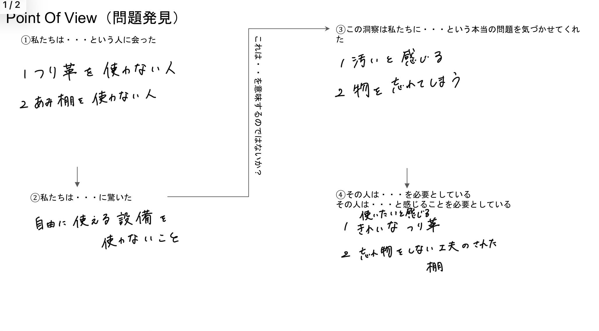
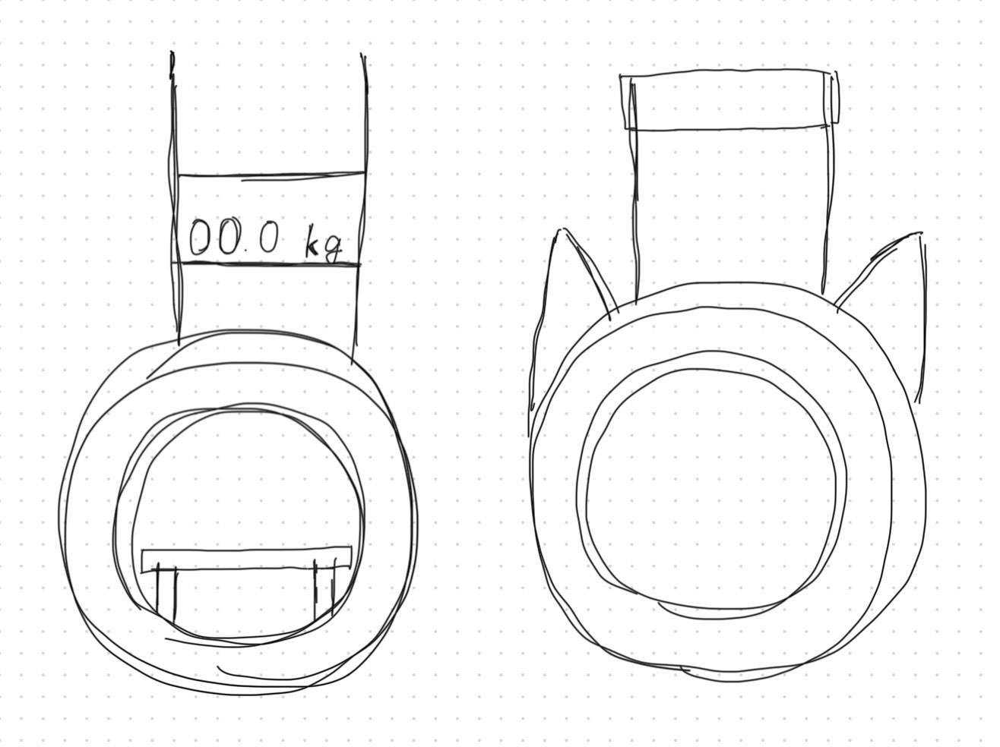

荷物を持っている訳ではなく手が空いている人がつり革を掴まないのはなぜかという疑問から、捕まりたくなるようなつり革を作ろうという
お題で制作に取り掛かった。
Point of view

POVでは自由に使える設備を使わないのは、汚いと感じる潔癖症の人や持ちにくい位置にあるのではないかといった原因が出てきました。
※今回は、２の網棚ではなくつり革という題材を採用しました。
手書き構想スケッチ

今回、私が出した案は２つあり右が握力を測ることのできるつり革で、左が可動式のつり革です。
制作の進行状況

まだ、完成に至っていないので現在の進行状況をお見せします。
スケッチした２つの案から今回採用したのは可動式つり革です。掴まる部分と可動部分を自分で制作し、結合部分は布を用いて作る予定です。
制作理由
捕まりたくなるような見た目と捕まりずらいから捕まっていないのかもという考えから、見た目が可愛らしく、動かすことができるつり
革を作ろうと考えたからです。
使用予定の機材：3Dプリンター